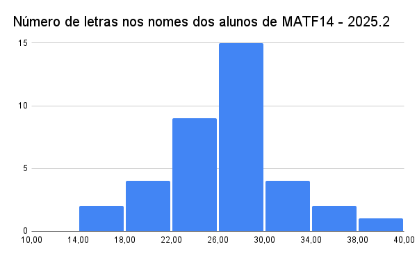

1.4 Medidas de tendência central e suas relações
Sejam \(x_1, x_2, \ldots, x_n\) os \(n\) valores observados de uma variável quantitativa.
Média aritmética. É o centro de gravidade dos dados:
\[ \bar{x} = \frac{x_1 + x_2 + \cdots + x_n}{n} = \frac{1}{n}\sum_{i=1}^n x_i. \]
Mediana. É o valor que ocupa a posição central quando os dados são ordenados: metade das observações fica abaixo, metade acima.
\[ \text{Mediana} = \begin{cases} x_{\left(\frac{n+1}{2}\right)}, & n \text{ ímpar}\\[4pt] \dfrac{x_{\left(\frac{n}{2}\right)} + x_{\left(\frac{n}{2}+1\right)}}{2}, & n \text{ par} \end{cases} \]
em que \(x_{(k)}\) denota o \(k\)-ésimo valor da amostra ordenada.
Moda. É o valor (ou categoria) que ocorre com maior frequência, a única medida de tendência central que faz sentido para variáveis qualitativas nominais.
which.max(), o R
não tem uma função moda() pronta, e a função mode() que existe faz outra
coisa completamente diferente, retorna o modo de armazenamento do objeto
("numeric", "character" etc.), não a moda estatística. Um jeito simples e
direto de achar a moda de uma variável qualitativa é contar com table() e localizar o
maior valor com which.max():## [1] "numeric"tab_freq_setor <- table(empresas$setor)
tab_freq_setor[which.max(tab_freq_setor)] # categoria mais frequente e sua contagem## Embalagens
## 31O mesmo truque funciona para achar a classe modal de uma variável contínua já agrupada em um
histograma, usando o objeto que hist() devolve quando plot = FALSE:
h_fat <- hist(empresas$faturamento99, plot = FALSE)
h_fat$mids[which.max(h_fat$counts)] # ponto médio da classe mais frequente## [1] 3500001.4.1 Média a partir de uma tabela de frequências
Quando os dados já vêm resumidos em uma tabela de frequências (valor \(x_i\) ocorrendo \(n_i\) vezes), recalcular a média a partir dos dados brutos seria redundante, a mesma fórmula da média pode ser reescrita diretamente em termos de \(n_i\) e da frequência relativa \(f_i = n_i/n\):
\[ \bar X = \frac{1}{n}\sum_{i=1}^k n_i x_i = \sum_{i=1}^k f_i x_i, \]
em que a soma agora percorre os \(k\) valores distintos da tabela (não mais os \(n\) valores brutos). É a mesma média de sempre, só que ponderada pela frequência de cada valor em vez de somar observação por observação.
Uma pesquisa com 80 microempresas registrou o número de funcionários \(x\) de cada uma, resumido nesta tabela de frequências:
| \(x_i\) (funcionários) | \(n_i\) | \(f_i=n_i/n\) | \(n_i x_i\) |
|---|---|---|---|
| 0 | 8 | 0.100 | 0 |
| 1 | 15 | 0.188 | 15 |
| 2 | 22 | 0.275 | 44 |
| 3 | 18 | 0.225 | 54 |
| 4 | 12 | 0.150 | 48 |
| 5 | 5 | 0.062 | 25 |
Somando a última coluna, \(\sum_i n_i x_i = 0(8)+1(15)+2(22)+3(18)+4(12)+5(5) = 186\), e como \(n=\sum_i n_i = 80\),
\[ \bar X = \frac{186}{80} = 2{,}325 \approx 2{,}33 \text{ funcionários}. \]
Confira com R, reconstruindo o vetor bruto de 80 valores a partir da tabela (com rep()) e
comparando as duas formas de calcular a mesma média:
x_bruto <- rep(microempresas$x, times = microempresas$n_i) # os 80 valores individuais
length(x_bruto) # confirma n = 80## [1] 80## [1] 2.325## [1] 2.323A mediana também sai direto da tabela, somando frequências acumuladas até passar da metade de \(n=80\) (a 40ª e a 41ª posição, em ordem): a classe \(x=0\) acumula 8 casos, \(x=1\) acumula \(8+15=23\), \(x=2\) acumula \(23+22=45\). Como \(23<40\le 45\) e \(23<41\le45\), tanto a 40ª quanto a 41ª observação ordenada caem na classe \(x=2\), logo a mediana é \(2\). A moda é o \(x_i\) de maior \(n_i\), que é \(x=2\) (com \(n_i=22\)). Note que média (\(2{,}33\)), mediana (\(2\)) e moda (\(2\)) ficam bem próximas, consistente com uma distribuição pouco assimétrica.
resumo_faturamento <- empresas |>
summarise(
media = mean(faturamento99),
mediana = median(faturamento99),
minimo = min(faturamento99),
maximo = max(faturamento99)
)
resumo_faturamento |> kbl(digits = 1) |> kable_styling(full_width = FALSE)| media | mediana | minimo | maximo |
|---|---|---|---|
| 334264.9 | 327898 | 74392 | 685430 |
A relação entre as três medidas é informativa sobre a forma da distribuição (retomada na Seção 1.7): em distribuições aproximadamente simétricas, média \(\approx\) mediana \(\approx\) moda; em distribuições assimétricas à direita (cauda longa de valores altos, como renda ou faturamento), tipicamente moda \(<\) mediana \(<\) média; em assimetria à esquerda, a ordem se inverte.
1. O Ministério do Trabalho divulga o "salário médio" de uma categoria profissional. Um sindicato, ao negociar reajuste, prefere divulgar a mediana. Explique a motivação de cada escolha, e o que isso revela sobre como estatísticas descritivas podem ser selecionadas estrategicamente, mesmo sem nenhuma delas ser "falsa".
2. Se a variável fosse escolaridade (ordinal, com categorias "fundamental", "médio", "superior"), faria sentido calcular uma "escolaridade média"? E uma "escolaridade mediana"? Justifique a diferença.
3. Pense em uma variável econômica que você esperaria ter moda muito diferente da média (por exemplo, preço de imóveis em uma cidade com bairros muito distintos). Qual seria a consequência prática de um agente imobiliário anunciar "o preço médio dos imóveis da cidade" sem qualificar por bairro?
4. Um fundo de investimento anuncia "retorno médio anualizado de 15% nos últimos 5 anos". Que pergunta sobre a mediana e sobre a variabilidade ano a ano você faria antes de decidir investir, só com base no que já foi discutido até aqui?
5. É possível uma distribuição ter média, mediana e moda exatamente iguais e, ainda assim, ser muito diferente de uma distribuição em forma de sino simétrica (pense, por exemplo, em uma distribuição bimodal simétrica)? O que isso ensina sobre os limites de resumir uma distribuição inteira só pelas medidas de tendência central?
1.4.2 Um exemplo com dados da própria turma
As melhores bases de dados para praticar Estatística Descritiva, às vezes, são as mais simples de coletar, inclusive os dados da própria turma. Duas ilustrações de turmas reais de MATF14 em semestres anteriores, lidas diretamente do histograma e resolvidas com a fórmula da média a partir de uma tabela de frequências da seção anterior, exatamente o tipo de situação em que ela é indispensável: não há mais acesso à nota individual de cada aluno, só à contagem por faixa.

Figure 1.4: Distribuição das notas da Prova 1 em uma turma real de MATF14 (2025.2).
Lendo a altura de cada barra do histograma (classes de amplitude 1, de 0 a 10), obtém-se a tabela de frequências abaixo, com o ponto médio de cada classe como representante \(x_i\):
notas_turma <- tibble(
classe = c("[0,1)", "[1,2)", "[2,3)", "[3,4)", "[4,5)", "[5,6)",
"[6,7)", "[7,8)", "[8,9)", "[9,10)"),
x_i = seq(0.5, 9.5, by = 1),
n_i = c(0, 1, 1, 3, 3, 5, 2, 5, 5, 7)
)
n_turma <- sum(notas_turma$n_i)
media_turma <- sum(notas_turma$n_i * notas_turma$x_i) / n_turma
n_turma; round(media_turma, 2)## [1] 32## [1] 6.72Com \(n=\) 32 alunos, a média é \(\bar X = \sum n_i x_i / n \approx\) 6.72. Para a mediana, acumulam-se as frequências até passar de \(n/2=16\): a 16ª e a 17ª observação (ordenadas) caem ambas na classe \([7,8)\) (frequência acumulada sobe de 15 para 20 nessa classe), logo a mediana \(\approx 7{,}5\). A moda é a classe de maior frequência, \([9,10)\) (7 alunos), representada por \(9{,}5\). Como média (\(\approx 6{,}7\)) \(<\) mediana (\(7{,}5\)) \(<\) moda (\(9{,}5\)), a distribuição é assimétrica à esquerda: uma cauda de notas baixas (a barra zerada em \([6,7)\), um “vale” entre dois grupos de alunos) puxa a média para baixo, mesmo com a maior concentração de alunos nas notas mais altas, o oposto do padrão visto no faturamento das empresas (cauda à direita). É a assinatura típica de uma prova em que a maioria da turma foi bem, mas um grupo minoritário teve desempenho bem abaixo do restante.

Figure 1.5: Número de letras no nome completo dos alunos de uma turma real de MATF14 (2025.2).
O mesmo procedimento aplicado ao histograma do número de letras no nome completo (classes de amplitude 4, exceto a última):
letras_turma <- tibble(
x_i = c(16, 20, 24, 28, 32, 36, 39),
n_i = c(2, 4, 9, 15, 4, 2, 1)
)
n_letras <- sum(letras_turma$n_i)
media_letras <- sum(letras_turma$n_i * letras_turma$x_i) / n_letras
n_letras; round(media_letras, 2)## [1] 37## [1] 26.68Com \(n=\) 37 alunos, \(\bar X \approx\) 26.68 letras. A mediana está na 19ª posição (de 37), que cai na classe \([26,30)\) (frequência acumulada sobe de 15 para 30 nessa classe), a mesma classe da moda (15 alunos, a maior frequência). Aqui média (\(\approx26{,}7\)), mediana e moda (\(28\)) ficam próximas, uma distribuição quase simétrica, um exercício quase lúdico (contar letras em nomes) que ainda assim segue exatamente o mesmo ferramental estatístico de uma variável econômica séria.
1. A distribuição das notas é assimétrica à esquerda, a das letras nos nomes é aproximadamente simétrica. Se você fosse o professor da disciplina e só pudesse olhar essas duas estatísticas (média e mediana) da prova, o que a diferença entre elas (mediana \(2{,}5\) pontos acima da média) sugere sobre calibrar a prova para a próxima aplicação?
2. Seria possível repetir o exercício do número de letras nos nomes com a sua própria turma nesta disciplina? Qual forma você esperaria ver, simétrica, assimétrica à direita, ou outra, e por quê?
3. Ao ler os valores de um histograma já pronto (em vez dos dados brutos), usa-se o ponto médio de cada classe como \(x_i\). Que tipo de erro (para mais ou para menos) essa aproximação pode introduzir na média calculada, comparada com a média exata que só seria possível com a nota individual de cada aluno?